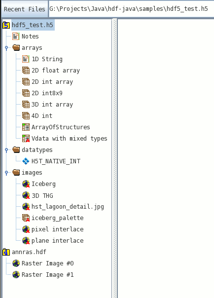

Please see The HDF Group's new Support Portal for the latest information.
HOME > PRODUCTS > JAVA > HDFVIEW > MODULARGUIDE
Table of Contents
- 1. Introduction
- 2. Fundamental approach
- 3. How to implement an I/O module
- 4. How to implement a GUI module
1.Introduction
This document describes the modular HDFView interfaces, and provides user guidance on how to implement HDFView modules. This guide is not the HDFView User's Guide. The HDFView Users Guide is installed with HDFView or you can visit the website at HDFView User's Guide.1.1 What is modular HDFView?
Modular HDFView is an improved HDFView with replaceable I/O and GUI modules. It consists of several interfaces that enable users to write and use alternative implementations of I/O and GUI components to replace default modules. The current replaceable modules include:- File I/O (already implemented)
- Image view
- Table view (a spreadsheet-like layout)
- Text view
- Metadata (metadata and attributes) view
- Tree view
- Palette view
1.2 Why modular HDFView?
Early versions of HDFView (version 1.3 or earlier) were implemented with standard GUI components such as tree view, table, and image view. These components could be replaced. There was no optional tree view, table view, and etc for users to display the data in a different way. Supporting a new data format would also require major changes in the GUI and I/O source code. To solve this problem, modular HDFView was introduced. Modular HDFView has the following advantages:- Separation of file I/O and data viewer: GUI components do not depend on file I/O implementation. Adding a new file format does not have to change any of the GUI components.
- Replaceable GUI modules: users can implement their GUI components to replace the default implementation of the TreeView, TableView, ImageView, etc without change to any other code. The development of these modules and HDFView are independent.
- Reusable source code: users can extend their classes from common packages and abstract classes for less coding.
- Configurable installation: users can choose to install HDF4 support or HDF5 support or both.
- Easy to maintain: replacing/changing one module does not change the rest of the source code.
1.3 Basic requirements
The modular HDFView should meet the following basic requirements:- Separate file I/O access and GUI components so that adding a new data format does not require changing the GUI, and vice versa.
- Provide abstract interfaces/classes along with a default implementation.
- Dynamically load user's modules: automatically detect user's module, which is packed in jar files
- Provide a mechanism for users to select which module to use when multiple modules are provided.
- Extensive documentation and examples on how to implement such a module.
2. Fundamental approach
The fundamental approach is to re-architect HDFView so that it separates API definition and implementation. HDFView only calls the abstract interfaces not the implementation. This allows users to write their own classes (or modules) which implement the interfaces to replace standard default implementation. The main goal is to make the modules easy to implement and flexible to meet user's needs.HDFView consists of three basic components: the main view, the object package, and the GUI modules. The following figure explains the relationship of the three components.

HDFView Components
The main window is the first window frame you see when you start HDFView. It has access to only the common object package (abstract data object classes) and the GUI interfaces. It does not depend on any implementation of the I/O and GUI components. Therefore, adding new modules does not require any change in HDFView. This separates user's implementation from the HDFView development.
The layout of the main window is shown in the following figure. The main window has two major panels: the TreeView Panel and the Data Panel. The TreeView Panel is used to display the structure of the file in tree. The Data Panel is used to show other GUI components such as ImageView, TableView and TextView.

HDFView Main Window
The common object package, ncsa.hdf.object, consists of abstract classes for file access. The abstract classes only define abstract methods such as data input/output from/to file. Sub-classes have to implement these interfaces. HDFView only depends on the abstract classes. For example, when you open a file from HDFView, the main view calls the method, ncsa.hdf.object.FileFormat.open(filename) and retrieves the file structure. The details of how to open the file and how to retrieve the file structure are left for implementation classes.
GUI components, such as TreeView, ImageView, TableView, etc, are interfaces instead of implementing classes. The main view only has access to these interfaces. For instance, when you launch a command from HDFView to display a dataset in TableView, HDFView calls TreeView.showDataContent(dataObject) and returns the implementation of the TableView of a user's selection.
3. How to implement an I/O module
3.1 Classes to implement
The following diagram shows the class hierarchy of the object package. The class diagram uses the Unified Modeling Language (UML) notations: association (has), generalization (inherits), refinement (implements) and composition (belongs), to represent the relations of classes. HObject is the base class of all data objects, which implements DataFormat. HObject has two inherited classes: Group and Dataset to represent HDF groups and datasets. Dataset has two sub-classes, ScalarDS and CompoundDS. Each FileFormat contains one or more HObjects.
I/O Class Hierarchy
To add a new I/O module (file format), the following classes must be implemented:
- FileFormat
FileFormat defines general I/O accessing interfaces to file resources, such as open/close file, and retrieve file structure. Two implementing classes, H5File and H4File, are provided for HDFView to support HDF5 and HDF4 respectively. - Group
Group is an abstract class. This class includes general information of a group object such as members of the group, and common operations on the group. Two sub-classes, H5Group and H4Group are provided to represent HDF5 group and HDF4 group respectively. - Dataset (ScalarDS or CompoundDS or both)
This abstract class includes general information of a dataset object such as datatype and dimensions, and common operations on the dataset such as read/write data values. Dataset has two abstract subclasses: ScalarDS and CompoundDS. User's classes must inherit from either ScalarDS or CompoundDS.
3.2 Steps to implement an I/O module
To add an I/O module into HDFView, you must follow the steps below:- Download and install HDFView and include $HDFVIEW/lib/*.jar files in your classpath
- Implement your I/O module (FileFormat, Group, and Dataset)
- Pack your binary classes in a jar file and put it at $HDFVIEW/lib/ext.
- If there is any required dynamic link library, put it in your system path or in $HDFVIEW/lib/ext for HDFView to detect it.
- Register the new data format in HDFView or the property file. You only need to register the new data format once.
- Register the new FileFormat from HDFView: Start HDFView and go to
"Tools" --> "Add File Format" and add the full class name of the FileFormat
with a file extension and key associated to the file format.

Register FileFormat from HDFView - Register the new FileFormat from the property file: start HDFView and
close it if you have never used HDFView before. After the first use of
HDFView, it creates a property file, hdfview.props, in the user directory.
Add the new FileFormat in the property file in the form of
module.fileformat.KEY=full_class_path.
For example, the highlighted line registers the H5File in the HDFView property file, located in your home directory.
Register FileFormat from Property File
4. How to implement a GUI module
4.1 Replaceable GUI components
Modular HDFView provides several interfaces for GUI components along with a default implementation. Users can write their own implementation of these interfaces to replace the default modules. The HDFView GUI components are TreeView, TableView and ImageView to show the file content visually. The main HDFView window is a frame to host these components. The current replaceable GUI modules include Tree view, Table view, Image view, Text view, Metadata view, Palette view- Tree view
TreeView defines interfaces for displaying and operating on a file structure in the form of a tree. When you open a file, HDFView will invoke the selected tree view module and display the structure of the file on the tree view panel. The User's module is responsible for the details of how the file structure is displayed and what action is taken when a tree item is clicked. The default tree view displays the structure of the file in a tree with data groups and data objects represented as conventional folders and icons. Users can easily expand or collapse folders to navigate the hierarchical structure of the file.
Default Tree View - Table view
TableView is a spreadsheet-like table to display numeric or string data values. The default table view provides very limited spreadsheet features. - Image view
ImageView is used to display images. The default image view is provided to display HDF4/5 images. It has very limited functionality for processing images. An HDF4 image is a raster image of 8-bit pixels with an indexed RGB color table, or a 24-bit true color image. An HDF5 image is a dataset that conforms to the HDF5 Image Specification (with attribute name="CLASS" value="Image"). The default image view supports two types of images: indexed and true color. Both indexed image and true color image have predefined attributes and data layout according to the HDF5 image specification. - Text view
TextView is like a note pad. It displays the content of a dataset, usually string-type datasets, in ASCII text. The default text view is a JInternalFrame with a JTextArea. - Metadata view
MetadataView shows metadata of objects. Metadata includes attributes and other properties of the object. The default metadata view is a JDialog with a tabbed panel to show general information and attributes of a data object.
Default Metadata View - Palette view
A palette or color table converts the logical color numbers stored in each pixel of an image dataset, normally represented as RGB triplets, that can be displayed as an image on the monitor. The palette view is for users to display and modify the values of the RGB pixels.

Default Palette View
4.2 Steps to implement a GUI module
To add and use a GUI module in HDFView, you must follow the steps below:- Download and install HDFView and include $HDFVIEW/lib/*.jar files in your classpath
- Implement your GUI module (TreeView, TableView, ImageView, etc.)
- Pack your binary classes in a jar file and put it at $HDFVIEW/lib/ext.
- Restart HDFView. HDFView will automatically detect and load the new GUI module.
- Set default GUI module. By default, HDFView opens datasets with default GUI
modules. You can change the default GUI modules by
"Tools" --> "User Options" --> "Default Module"
Set Default GUI Modules
- - Last modified: 31 January 2017